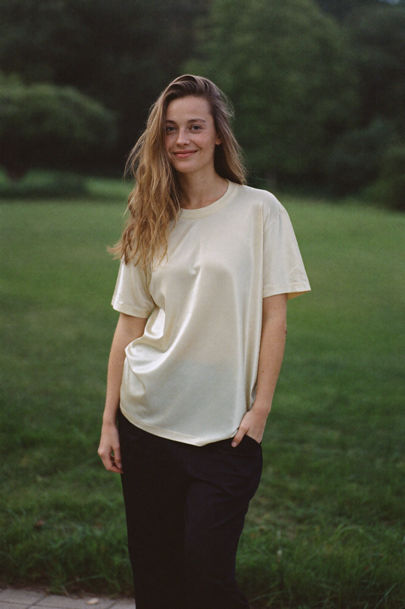
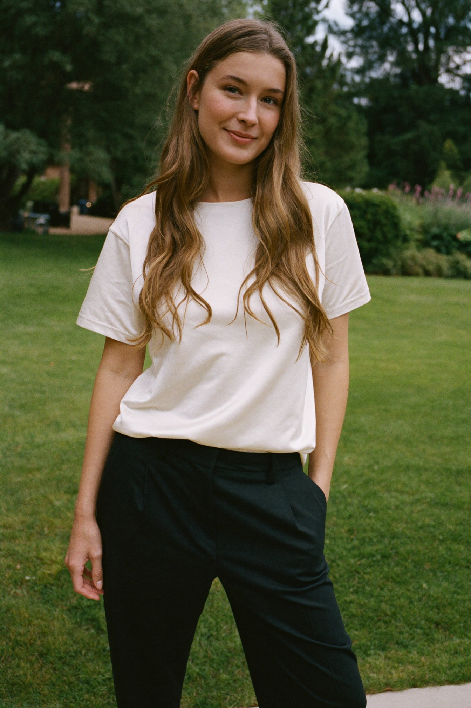
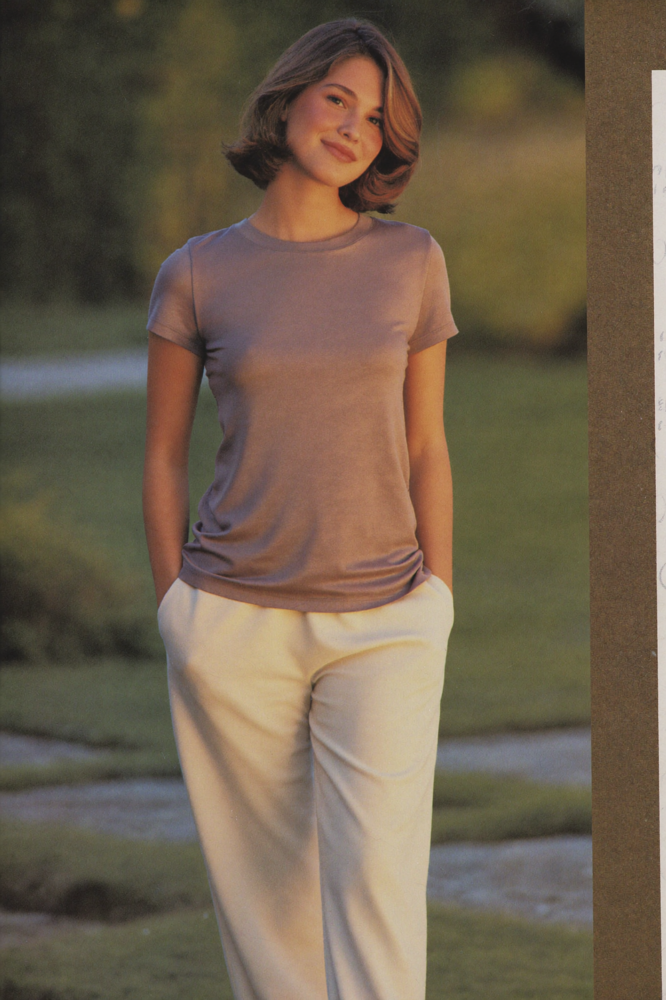
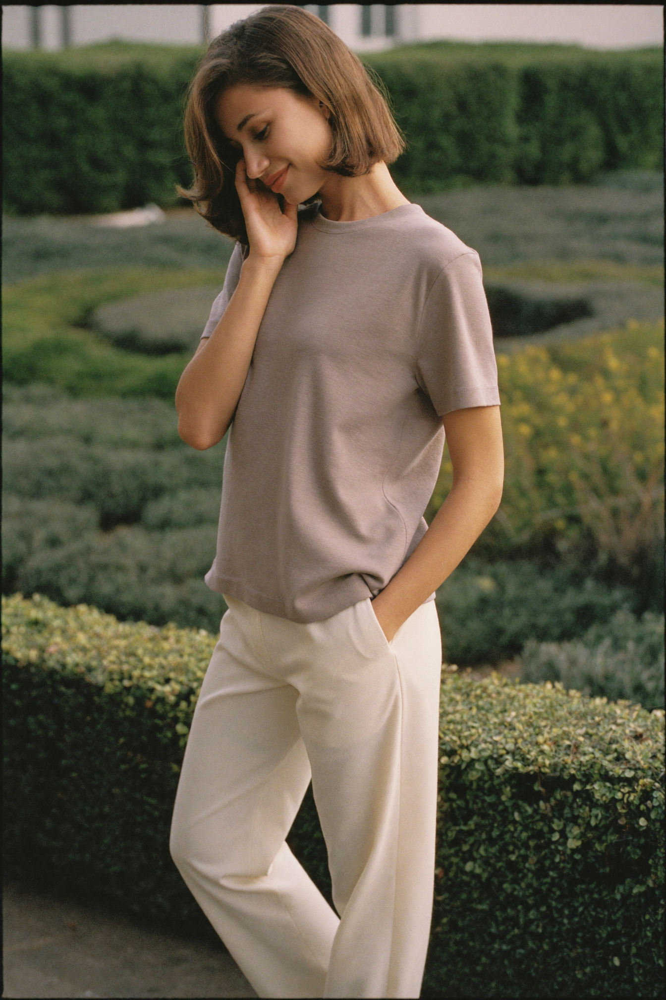
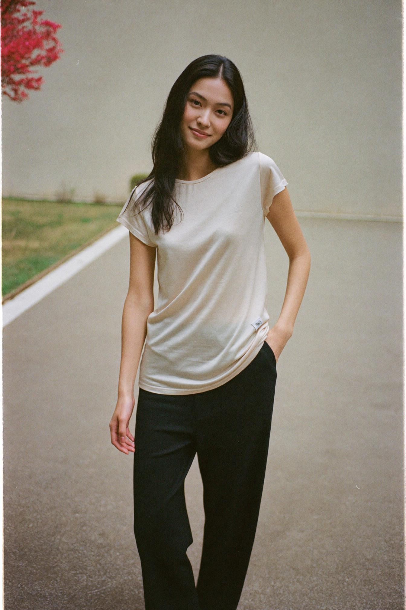

Option A
New direction: younger, softer, gentler — approachable "girl-next-door" warmth, not strong/editorial. Three ethnicities, short + long hair, full body in basic tees & trousers (brand palette), natural outdoor light. Two options per model.






